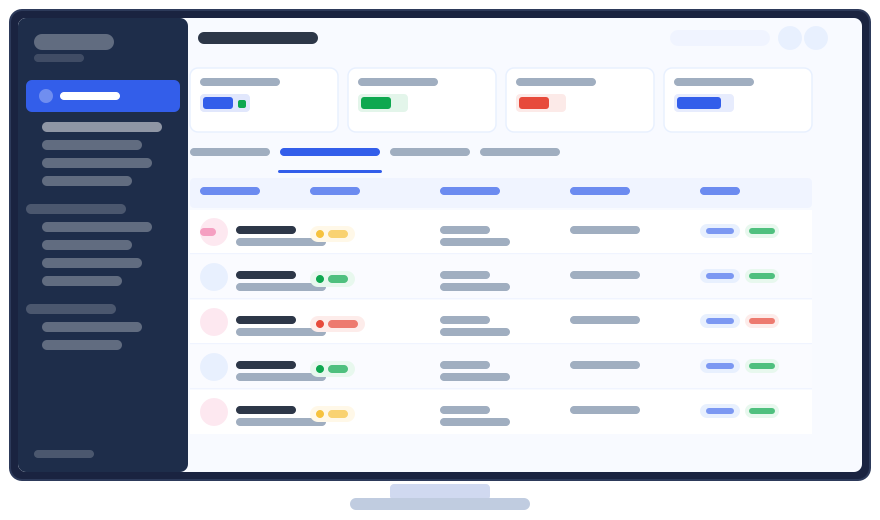

从孕产管理到慢病监护，构建院内外一体化的数字医疗体验。
以 MDT 多学科协作为核心，AI 与智能硬件为支撑，打通从医院到家庭的健康服务闭环。
数字化渗透率仍处于早期，结构性矛盾亟待解决
一次产检平均等待 3 小时，医生问诊仅 5 分钟。院内医疗资源严重不足，医患双方体验均亟待提升。
患者在家时间长达 270 天，缺乏专业、连续的健康监护与指导。高危风险往往因发现不及时而酿成严重后果。
产科、营养科、内科、心理科等科室缺乏有效联动机制，患者需在多个科室间来回奔波，管理方案碎片化。
我们不只是做一个 App，而是围绕患者全周期健康旅程，构建能真正落地、持续运营的数字医疗产品体系。
某妇幼健康管理品牌 · 覆盖孕前到产后全周期 · 多端联动 · AI + 智能硬件三位一体
核心交付物
来自多中心真实世界研究的循证数据证明：实施多学科联合院内外一体化孕产健康管理后，关键妊娠风险显著下降。
| 风险指标 | 改善幅度 | 统计显著性 |
|---|---|---|
| 子痫前期风险 | ↓ 18% | P=0.044 |
| 妊娠期糖尿病风险 | ↓ 15% | P=0.721 |
| 胎盘早剥风险 | ↓ 64% | OR=0.721 |
| 胎儿宫内生长受限风险 | ↓ 30% | P=0.045 |
| 剖宫产率 | ↓ 12.1% | OR=0.701 |
| 产后出血相对风险 | ↓ 56.8% | P<0.001 |
* 数据来源于多中心真实世界研究，包含多省市三甲医院患者队列
覆盖医疗健康数字化全链路，从0到1或在现有系统上持续迭代
患者端 App、医生端 App、小程序多端，全场景覆盖，iOS / Android 原生及跨平台开发均可交付。
基于大语言模型构建 24 小时 AI 健康问答、个性化健康报告生成、营养膳食方案推送等智能服务。
对接胎心仪、血压仪、血糖仪、心电仪等多类智能硬件，实时数据上云，支持医生远程判读与预警。
面向医院及医疗机构的运营管理后台，支持患者档案、预约管理、医患沟通、报告追踪等核心功能。
整合患者健康数据、服务数据、运营数据，为医疗机构提供可视化数据看板与管理决策支持。
打通多科室数据壁垒，支持联合门诊、专属管理方案、跨科室协同会诊等核心业务流程数字化。
以下界面来自已上线运营的真实产品，非原型或演示版本
多终端孕妇胎心监护数据实时汇聚，医生可随时查看待审核报告与已完成报告，风险分级标注清晰。支持覆盖全国数百家医院的集中化远程判读运营模式。

整合全渠道交易数据，以可视化图表呈现营收趋势、医院排行、订单结构等核心经营指标，支持管理层数据驱动决策，摆脱"凭感觉"运营。
| 客户类型 | 典型需求 | 我们能做什么 |
|---|---|---|
| 医院 / 医疗集团 | 数字产科建设、患者全程管理、院外延伸服务 | 患者端 App + 医生端 + SaaS 后台 + 数据平台 |
| 健康管理品牌 | 从 0 到 1 搭建数字化平台，快速获客与转化 | 全端产品研发 + AI 健康助理 + 智能硬件接入 |
| 母婴 / 大健康服务商 | 产品数字化升级，扩大服务边界与用户粘性 | 现有系统迭代 + 小程序多端 + 数据运营支撑 |